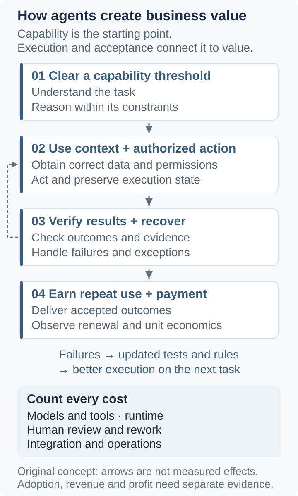

The Economics of AI Agents: Workflows, Verification Costs, and Where Value Accumulates
Public moves by OpenAI, Anthropic, and Alibaba Cloud reveal a contest beyond model calls. Acceptance, human review, and exception handling help determine where business value can accumulate.
Once a model can make a sequence of tool calls, why are businesses still reluctant to delegate an entire process? One familiar explanation is that the model is not capable enough. Another question matters just as much: even when most steps are correct, does confirming the result, handling exceptions, and bearing the consequences of errors cost less than the existing human process?
My view is conditional: when several models clear the capability threshold for a class of tasks, competition shifts partly toward workflow control and verification costs. By control, I mean the ability to receive real tasks, obtain appropriate permissions, take action, and confirm the outcome. Owning a chat interface is insufficient, and model capability remains essential.
1. Three moves toward three product positions
On February 5, 2026, OpenAI announced Frontier, bringing enterprise context, agent permissions, and evaluation into a platform. The announcement described access for a limited set of customers at launch. This establishes the company's announced product direction and initial scope, rather than independently verified enterprise returns. Source: OpenAI's launch announcement.
On April 8, 2026, Anthropic described the architecture of Managed Agents. It separates session records, the loop coordinating model and tool calls, and the sandbox that executes code, allowing components to recover or be replaced after failures. The emphasis is on infrastructure for sustained execution. Source: Anthropic's engineering article.
On May 26, 2026, Alibaba Cloud announced an agent ecosystem update, including common capabilities from more than 60 cloud products in Skills and MCP-compatible forms, alongside Qwen Cloud and the enterprise-oriented JVS Agent Suite. These are officially announced capabilities and products; their announcement does not establish adoption or revenue. Source: Alibaba Cloud's announcement.
The three positions emphasize an enterprise collaboration platform, a managed execution environment, and an ecosystem of cloud tools. My inference is that all three seek a role in ongoing business activity after the model call. Whoever manages context, execution state, and quality feedback moves closer to work that recurs every day. Similar product directions do not establish where profits will ultimately concentrate.
2. Change the unit of account: from a call to an accepted task
Consider a hypothetical procurement reconciliation process. An agent reads contracts and invoices, identifies discrepancies, submits proposed corrections, and obtains confirmation from someone with the necessary authority. A plausible explanation is an intermediate output. Delivery requires current data, the correct state in the business system, and a traceable approval record.
This motivates an accounting framework that is more useful than comparing the price per million tokens in isolation:
Here, \(C_{\mathrm{accept}}\) is the cost per accepted task; \(C_{\mathrm{infer}}\) covers model and tool calls, \(C_{\mathrm{exec}}\) covers execution infrastructure, \(C_{\mathrm{review}}\) covers human review and rework, and \(C_{\mathrm{ops}}\) covers amortized integration and operations. \(N_{\mathrm{accept}}\) is the number of accepted tasks. All terms use the same accounting period and currency; the unit cost is defined only when \(N_{\mathrm{accept}} > 0\).
This is an analytical framework, not a measured result. The numerator must include spending on failed attempts, and the denominator must use acceptance criteria fixed in advance. Also report the completion rate across all eligible incoming tasks, their difficulty mix, and errors that escape detection. Otherwise, selecting easier tasks or relaxing standards can manufacture an apparent cost reduction. Business losses caused by errors should be reported separately; an average API bill can hide them.
Verification is particularly easy to underestimate. A system saying that work is complete does not establish that the correct change occurred elsewhere. Anthropic's evaluation guide also distinguishes an interaction transcript from the final state of the environment. Source: its January 9, 2026 guide to agent evaluations. In the procurement example, acceptance should check the accounts, authorization, and supporting evidence. Asking a second model whether the explanation sounds correct is insufficient.

Figure 1. Original conceptual diagram. Arrows represent conditional causal mechanisms, not measured performance or revenue growth.
3. Value follows whoever reduces the most expensive step
Model providers can retain a capability premium while expanding into operations. A stronger model may reduce retries, review, and undetected errors enough to deliver a lower cost per accepted task despite a higher price per call. The platform direction illustrated by Frontier could also give the provider a role in integration and feedback. However, if each customer requires substantial bespoke work, higher service revenue need not improve margins.
Cloud providers can serve the resource demand created by sustained execution. Sandboxes, storage, and tool connections turn producing an answer into running a task. Alibaba Cloud's product portfolio makes this route visible, but greater resource consumption is only a potential monetization channel. Whether it creates additional value or relocates existing compute demand must be judged through actual payments and unit costs.
Vertical applications can define and deliver outcomes that customers can accept. A domain team with access to incoming tasks, exception rules, and customer-approved quality criteria may reduce deployment effort, review, and rework. More connectors or longer prompts are insufficient evidence of a moat. An advantage should show up in faster onboarding, less human effort at equivalent quality, and continued reliable delivery after replacing the underlying model.
This also explains why outcome-based pricing is a contract structure, not a guarantee of attractive economics. A supplier that absorbs exception handling without reducing exception rates can turn a software business into labor outsourcing. Customer value, supplier revenue, and supplier profit require separate accounting.
4. Three counterarguments that constrain the thesis
First, capability remains the primary bottleneck for some tasks. If a model cannot understand a critical constraint, a well-engineered workflow may simply execute the wrong action more consistently. Conversely, a capability advance can make elaborate workarounds redundant. Anthropic's architecture article explicitly notes that supporting logic built around earlier model limitations can become obsolete. A durable advantage cannot rest entirely on today's model weaknesses.
Second, open interfaces can weaken exclusivity. When the Qwen team released Qwen3-Coder on July 22, 2025, it also introduced the open-source Qwen Code and emphasized tool integration. Source: the Qwen team's announcement. This does not establish that migration is costless. It does challenge the assumption that every workflow must become captive to one model provider. Existing business systems can also retain their advantages in task access and permissions.
Third, some processes do not need a general-purpose agent. With stable rules, deterministic automation may be cheaper. Where results are difficult to verify and errors are costly, review can require as much effort as doing the task directly. Helping a person with one critical step may then create more business value than executing the entire process autonomously.
5. What would count as evidence over the next 6–24 months?
The following windows run from this article's publication date. They are observation periods, not growth forecasts, and carry no invented numerical targets. Comparisons should keep the task scope stable and include both the existing human process and the most suitable deterministic automation baseline.
Window
Observable measures
Question being tested
Within 6 months: by April 2027
Accepted completion rate, human time per accepted task, recovery time after failure, and undetected errors
Does total work decrease, or is it transferred to reviewers?
6–12 months: by October 2027
Continued use of the same business workflow, regressions after model upgrades, and integration and validation effort when replacing a model
Can value be delivered repeatedly? Does it depend on one model or on portable workflow capabilities?
12–24 months: by October 2028
Paid renewals, gross margin including human services and infrastructure, and revenue and cost per accepted task
Do customers recognize the value, and does it support sustainable supplier economics?
Better evaluation results, real adoption, and revenue growth are three different kinds of evidence. They cannot substitute for one another. Scientific applications require a further distinction between computational results, experimental validation, and real-world effects: running more analyses does not directly establish that more valid knowledge has been discovered.
I would prioritize products that present acceptance criteria, error records, and complete costs together for clearly defined tasks. If model advances eliminate most integration and review costs, or open tools rapidly commoditize these capabilities, the case for sustained excess profits at the workflow layer weakens. What deserves investment is the uncertainty and labor a workflow consistently removes, rather than the complexity of the workflow itself.